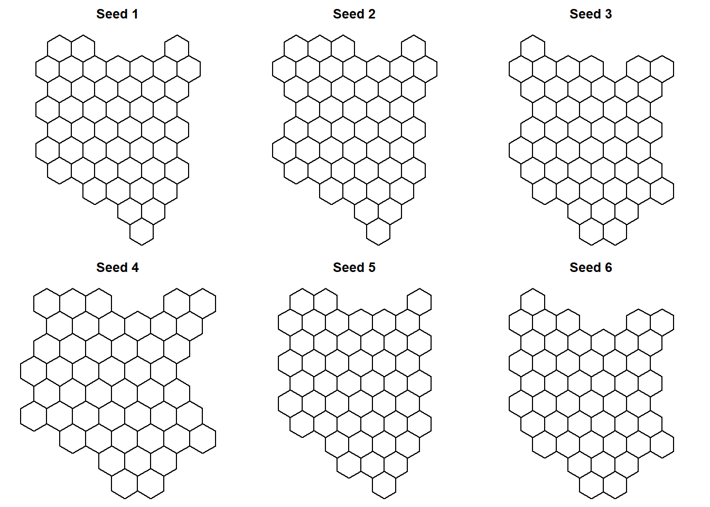
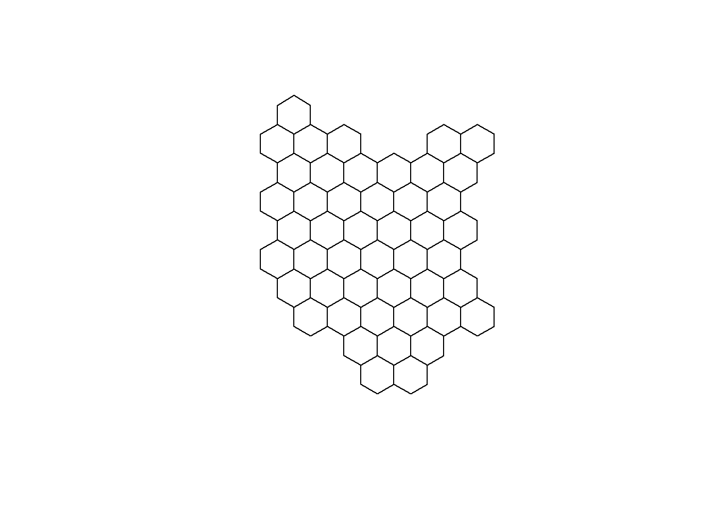

Part 1- How to create hexbin choropleth map to visualize data?
Static and animated map to visualize COVID-19 data for Kenya

NewYork Times, The Economist, The Washington Post and many other news outlets often use hexbin maps to convey information in exciting and cool ways. I have been always drawn to these kind of maps, and wanted to create one myself. Last year i got the opportunity (and data!) to learn and create choropleth hexbin maps to show the progression of COVID-19 cases.
I am planning to through the whole process in two parts. In this first part, i will talk about where i got Kenya’s shape files, data munging with the shape files data, and creating the hexagonal grid.
We first start with downloading the shape files for Kenya from the GADM website which is a high-resolution database of country administrative areas. The data is not freely available for use in commercial purposes. The website provide files which can be directly read into R, which makes this website a really handy resource. It has pretty latest shape files for almost all the countries in the worlds. You can find Kenya’s shape files on GADM. We will download level-1 shape files, as we are only interested in county level data. Level-2 and level-3 provide more granulated information of Kenya’s administrative areas.
We will unzip the downloaded folder, and load the shape file in R. We will use “rgdal” library to load the shape file into R. “rgdal” is R’s interface to the “Geospatial Abstraction Library (GDAL)” which is used by other open source GIS packages such as QGIS and enables R to handle a broader range of spatial data formats.
library(rgdal)
Now, we read the shape file into R.
library(here) #this package is just used to refer to the folder where the shape file is kept
original_shapes <- readOGR(dsn = here("./content/post/2021-03-07-hexbin/gadm36_KEN_shp"), layer = "gadm36_KEN_1")
Once we have read the data into R. we will view the shape file data using the head() function. This function shows the first 5 rows of the shape file data.
head(original_shapes@data)
## GID_0 NAME_0 GID_1 NAME_1 VARNAME_1 NL_NAME_1 TYPE_1 ENGTYPE_1
## 0 KEN Kenya KEN.1_1 Baringo <NA> <NA> County County
## 1 KEN Kenya KEN.2_1 Bomet <NA> <NA> County County
## 2 KEN Kenya KEN.3_1 Bungoma <NA> <NA> County County
## 3 KEN Kenya KEN.4_1 Busia <NA> <NA> County County
## 4 KEN Kenya KEN.5_1 Elgeyo-Marakwet <NA> <NA> County County
## 5 KEN Kenya KEN.6_1 Embu <NA> <NA> County County
## CC_1 HASC_1
## 0 30 KE.BA
## 1 36 KE.BO
## 2 39 KE.BN
## 3 40 KE.BS
## 4 28 KE.EM
## 5 14 KE.EB
On the choropleth hex map of kenya we will like to show the names of each county, but we can’t write the full name of the counties as this will make the map very busy and chaotic. Therefore, we will abbreviate the names of all the counties, and then show them on the map. To accomplish this, we have created a separate excel file with abbreviations for all county names. You can also google or find these abbreviations on wikipedia.
We will first read this abbreviation excel, and then add these abbreviations to the “original_shapes” data. Basically, what we are doing here is to gradually add all the information one after other, that we require, to the shape file data to get it ready for the visualization.
#loading the required library and reading the CSV file with region abbreviation
library(readxl)
df_abb <- read_excel(here("./content/post/2021-03-07-hexbin/abb.xlsx"))
#viewing the first 5 rows of the data frame
head(df_abb)
## # A tibble: 6 x 3
## County ABB ABV
## <chr> <chr> <chr>
## 1 Baringo KE.BA BA
## 2 Bomet KE.BO BO
## 3 Bungoma KE.BN BN
## 4 Busia KE.BS BS
## 5 Elgeyo-Marakwet KE.EM EM
## 6 Embu KE.EB EB
#removing the ABB column from the data frame
df_abb <- subset(df_abb ,select = -c(ABB))
head(df_abb)
## # A tibble: 6 x 2
## County ABV
## <chr> <chr>
## 1 Baringo BA
## 2 Bomet BO
## 3 Bungoma BN
## 4 Busia BS
## 5 Elgeyo-Marakwet EM
## 6 Embu EB
Now, we will join the abbreviation data frame with the shape file data frame. The “County” column of “df_abb” data frame, and the “Name_1” column of “original_shapes” data have the same information i.e. the name of counties in Kenya. Therefore, we will use these columns to join the two data frames. We will use left_join to combine the two data frames.
#renaming "County" column using the dplyr library, we could also have joined the two data frames without renaming "County" as well
library(dplyr)
df_abb <- df_abb %>%
rename(NAME_1=County)
#using left_join() to join the two data frames
original_shapes@data<- left_join(original_shapes@data, df_abb, by=c("NAME_1"="NAME_1"))
head(original_shapes@data)
## GID_0 NAME_0 GID_1 NAME_1 VARNAME_1 NL_NAME_1 TYPE_1 ENGTYPE_1
## 1 KEN Kenya KEN.1_1 Baringo <NA> <NA> County County
## 2 KEN Kenya KEN.2_1 Bomet <NA> <NA> County County
## 3 KEN Kenya KEN.3_1 Bungoma <NA> <NA> County County
## 4 KEN Kenya KEN.4_1 Busia <NA> <NA> County County
## 5 KEN Kenya KEN.5_1 Elgeyo-Marakwet <NA> <NA> County County
## 6 KEN Kenya KEN.6_1 Embu <NA> <NA> County County
## CC_1 HASC_1 ABV
## 1 30 KE.BA BA
## 2 36 KE.BO BO
## 3 39 KE.BN BN
## 4 40 KE.BS BS
## 5 28 KE.EM EM
## 6 14 KE.EB EB
After we have joined the two data frames, we will turn our focus tesselating the map polygons of Kenya into hexagons. Tesselation means covering a flat surface (in this case a map) with one or more geometric shapes which do not overlap and there is no gaps between them.
We will use “geogrid” package in R to algorithmically tessellate kenya’s map into hexagonal grids. You can find more information on its github repository.
We will us calculate_grid() function of “geogrid” library to achieve our goal. This function takes in SpatialPolygonsDataframe or sf object, a learning rate (suggestion = 0.03 to begin), a grid type hexagonal or regular and a seed value. calculate_grid() function uses mathematical algorithm to covert the boundary of the polygons into hexagon shapes, while still trying to preserve the actual shape of the map. Therefore, as we can see there can be many versions of the grids that can be created. The “seed” attribute of calculate_grid() lets us generate different versions of grids. Thus, we should visually inspect each grid, and choose the grid which best captures the actual shape of the map.
Lets first create 6 possible versions of the grid for Kenya’s map polygons. You can create more versions and choose from them.
library(geogrid)
par(mfrow = c(2, 3), mar = c(0, 0, 2, 0))
for (i in 1:6) {
new_cells <- calculate_grid(shape = original_shapes, grid_type = "hexagonal", seed = i)
plot(new_cells, main = paste("Seed", i, sep = " "))
}
 Seed 6, i feel, best preserves Kenya’s map geometry. Therefore, we will choose this seed, and assign this grid to convert Kenya’s map into hexbin map.
#Grid plot
#we choose grid 6 as it closely matches the actual geometry of kenya
new_cells_reg <- calculate_grid(shape = original_shapes, grid_type = "hexagonal", seed = 6)
#assign_polygons() function assigns the polygon in the original spatial data to their new location based on the calculated grid function and the seed selected
resultreg <- assign_polygons(original_shapes, new_cells_reg)
#plotting Kenya's grid map
plot(resultreg)

I will end this post here. In the second part of the tutorial, i will go through the joining of shape file data and the CVOID-19 data for Kenya, and creation of static and animated choropleth hexbin maps to show the progression of COVID-19 cases.